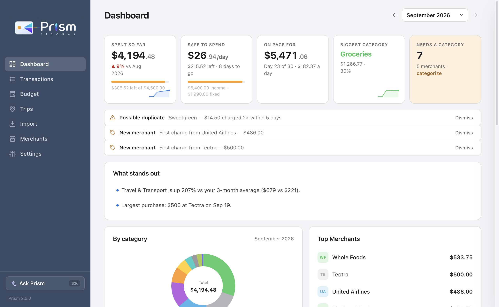
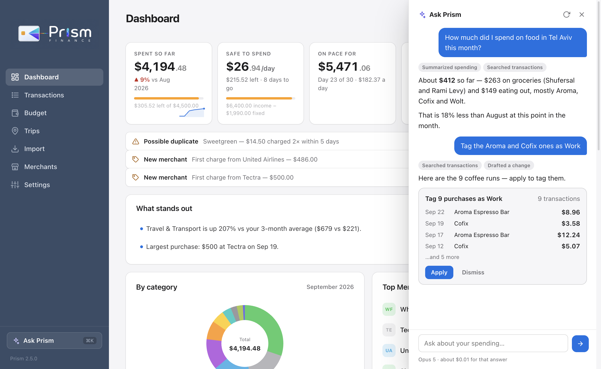
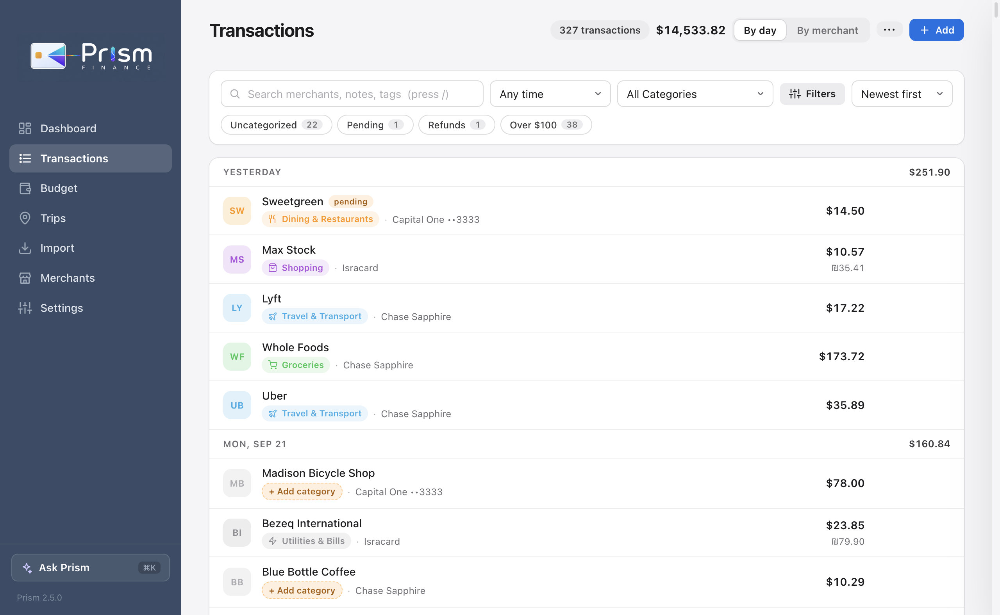
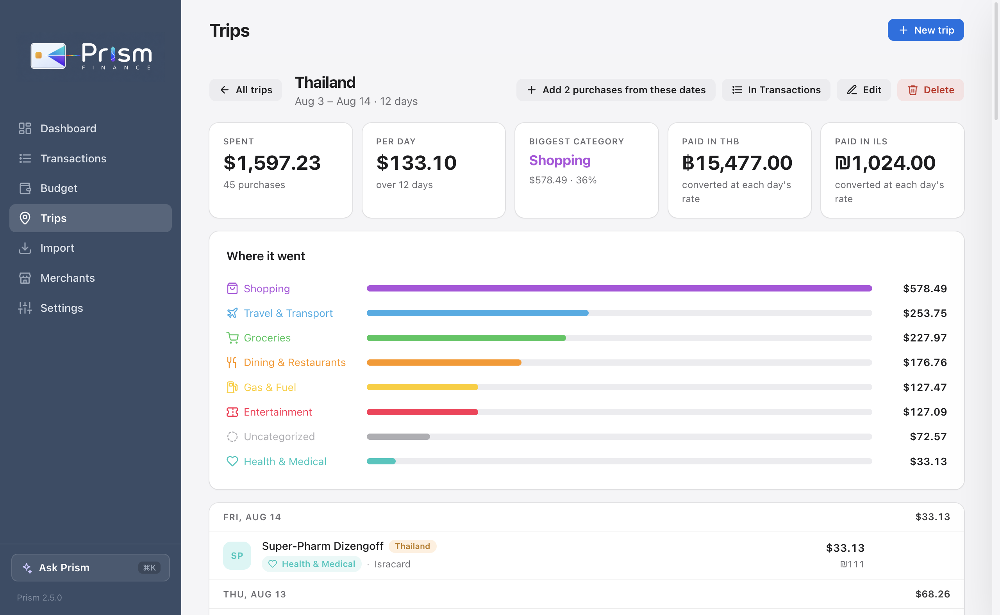

Bank sync
Your own Plaid keys, checked every 15 minutes. Pending charges settle in place.
Personal spending · private by design
Prism turns bank sync, statements and receipts into a clean ledger you actually understand — trips, refunds, card due dates, what you're owed — and an assistant you can ask anything about it. On your own computer, or in your browser.

How it works
Connect a card through Plaid and new purchases arrive on their own. Or drop in a CSV, a PDF statement, a screenshot of your banking app, or a photo of a receipt.
Hundreds of rules for US and Israeli merchants, a memory of your choices, logos, refund matching, and a merchant-intelligence pass for the long tail — categorized on their own.
"How much did I spend on food in Tel Aviv?" "Tag last week's Bangkok purchases as Thailand." Answers come from your data, and changes wait for your click.
Ask Prism
Claude answers over your own ledger with tools — totals, comparisons, a merchant's history, what's due on your cards. When you ask it to change something, it drafts the change and you apply it.

The ledger
Grouped by day with daily totals, merchant logos, categories with icons, tags, and a raw view of exactly how each charge appeared on your statement.

Trips, bills, and what's coming
A trip is a tag plus two dates: the total, per-day average and category split write themselves. Cards pull their statement balances and due dates, and safe-to-spend tells you what's left of the month.

And the rest
Your own Plaid keys, checked every 15 minutes. Pending charges settle in place.
PDFs, app screenshots and receipt photos become rows. A receipt can be split by category.
Colors, icons, your own categories, merge or hide the ones you don't use.
Income, fixed expenses, a monthly target and per-category limits — with a per-day safe-to-spend.
Statement balances, minimum payments and due dates for each card, straight from the bank.
US and Israeli merchants recognized out of the box; transliterated names get their Hebrew and meaning.
Follows your system, or pick one. Designed to feel at home on a Mac.
⌘K to ask, / to search, N for a new purchase, arrows to change month. Undo instead of "are you sure?".
Privacy
Prism was built for one person's own money first, and it shows: there's no account to create for the desktop app, no analytics, and nothing phones home.
The desktop app keeps everything in a folder on your Mac or PC, with daily backups. Bank tokens and API keys sit in the OS keychain.
The hosted version gives every account its own data folder and seals your keys with a server secret. Same app, same rules.
Bank sync uses your own Plaid keys and the assistant your own Anthropic key — only what a question needs is sent, never the whole ledger. And every line is open source.
Get Prism
Apple silicon Macs · Windows 10 and up
Questions
Yes. Prism is open source and there's no subscription. Bank sync uses a free Plaid developer account (your own keys), and the assistant uses your own Anthropic API key, which costs cents for a month of normal use — the app shows you the running total.
Bank sync covers US banks and cards through Plaid. Anything else — including Israeli banks and cards — comes in through statements: CSV, PDF, or a screenshot of the banking app read by Claude.
No. Everything core works without one: sync, statements, categorization, budgets, trips, refunds. A key adds Ask Prism, reading screenshots and receipts, learning unfamiliar merchants, a category review with reasons, and "explain this charge".
They're the same app. The desktop app keeps your data in a folder on your computer with no account at all. The browser version needs an account and keeps your data in your own folder on the server, with keys sealed by the server's secret.
Prism isn't code-signed yet, so SmartScreen shows a warning on new apps. Click "More info" then "Run anyway". You can read the whole source on GitHub.
In plain JSON files in the app's data folder (Settings → About opens it), with daily backups. Export any view to CSV at any time.
Feedback